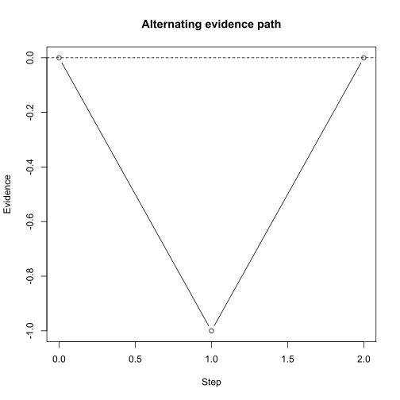

这份文档面向谁
这份文档面向一般用户及您的 AI：您可能不打算长期维护
eam，但您确实有一个自定义的证据积累过程模型需要拟合。
这里的推荐工作方式，您只负责理论，而 AI 负责依赖我们的框架完成实现：
- 您先用自然语言描述一个感性的认知过程。
- AI 把这段描述整理成一组明确规则。
- 您和 AI 一起写一个很小、很草稿的 R for-loop，只描述单个 trial 中证据如何变化。
- 您确认这段 R 逻辑是否符合您的理论直觉。
- 您提出几个能手算的测试案例，AI 把它们写成 testthat。
- AI 把这段 R 参考逻辑翻译到 C++ backend，并完成 router/wrapper 等接线。
- 您审阅 R 草稿、测试案例和最终小 demo 的结果，而不是逐行审阅所有 C++ 和接线代码。
这个策略成立，是因为 eam
已经构建好了数据流和代码框架。AI
在有明确模板和约束的情况下，举一反三的能力非常强。这能让您专注于实现您构想的模型，而不需要理解实现中的诸多细节。
推荐您将这份文档包含在您 与 AI 的对话的上下文中，与它一起完成模型的扩展。
设计哲学
自定义模型不需要一开始就写成通用框架。相反，第一版应该尽量明确、显式、写死。
如果您的模型只有一个特定任务、一个特定 response 规则、几个固定参数名，就直接这样写。不要过早设计“适用于所有模型”的 API。对自定义模型来说，
- 清楚比抽象更重要
- 明确且可测试比接口的泛型更重要
一个例子是，最好连 noise
的生成逻辑都直接写死在代码里，而不是如我们提供的一般接口那样，设计一个
noise_factory 来让用户提供一个函数。您完全可以直接在 C++
里写死一个特定的 noise 生成逻辑，这样更清楚，也更容易测试。
给 AI 的概述
本文将围绕以下几个核心函数完成模型的扩展，用户目前可以忽略这部分，在下一章节，我们会一步步完成这些函数的修改：
-
src/custom-model.cpp中的accumulate_evidence_custom_model() -
R/simulation_models.R中的run_trial_custom_model() -
R/simulation_router.R中的detect_backend_custom_model() -
R/simulation.R中的"custom-model"dispatch -
tests/testthat/test-custom-model.R中直接针对accumulate_evidence_custom_model()的最小测试
建议您可以直接修改这些函数来实现自己的模型。另起炉灶也完全可以：复制这些文件中的模式，换一个名称即可。
示例模型
作为用户，我们的第一步是先形成对模型的清晰直觉。并且把这个直觉用自然语言描述出来。
我们在这个教程中，用一个刻意简单的单界模型作我们的例子：证据从
Z 出发，每一步从 noise_func
取得一个噪音值。奇数步噪音必定为负，偶数步噪音必定为正。当证据达到单一边界
A 时，记录反应。
用户一开始可能只会这样描述：
我想要一个一上一下的证据积累过程。第一步总是被负向扰动拉低，第二步总是被正向扰动拉回去。
AI 可以先把它整理成下面的规则，交给用户确认：
- 对每个 item，证据从
Z开始。 - 第 1 步，证据减少
abs(noise)。 - 第 2 步，证据增加
abs(noise)。 - 第 3 步，再减少
abs(noise)，之后如此交替。 - 如果证据达到单一边界
A，记录item_idx和rt。 - 示例额外输出
evidence，方便测试和诊断；这不是最小惯例的一部分。
用户确认这些规则后，可以由 AI 先写一个非常草稿的 R 参考实现。它不需要函数签名这些细节；只要能表达过程即可：
evidence <- 0
dt <- 0.1
A <- 0
noise_fun <- function() 1
trace <- data.frame(step_idx = 0, evidence = evidence)
for (step_idx in 1:2) {
direction <- if (step_idx %% 2 == 1) -1 else 1
noise <- noise_fun()
evidence <- evidence + direction * abs(noise)
trace <- rbind(trace, data.frame(step_idx = step_idx, evidence = evidence))
if (evidence >= A) {
rt <- step_idx * dt
break
}
}
list(rt = rt, evidence = evidence)
#> $rt
#> [1] 0.2
#>
#> $evidence
#> [1] 0
plot(
trace$step_idx,
trace$evidence,
type = "b",
xlab = "Step",
ylab = "Evidence",
main = "Alternating evidence path"
)
abline(h = A, lty = 2)
这段 R 代码不是为了性能，也不是最终 API。它的价值是在我们和AI之间用程序化的语言达成共识：
- 确实是第一步下降，第二步上升。
-
noise_fun为常量 1 确实导致了第一步下降 1，第二步上升 1。 - 图像也能进一步帮助用户直接检查这条路径是否符合直觉。
- 甚至，通过看代码，用户还能识别一些边界行为，例如，起始点为零的情况下，我们是否应该返回RT等于零。如果目前的行为不符合预期，我们和 AI 应当一起修改 r 语言的代码，直到它完全符合您的理论直觉。
确认后，我们就可以要求 AI 将这段代码翻译到对应的 cpp
函数，在这个示例里，它是
accumulate_evidence_custom_model()。
这一步，只要 r 语言的代码符合您的直觉，那么您应该完全不用担心 cpp 代码是否正确。实际上，如果您不熟悉 cpp，建议您完全不要审阅 cpp 代码。我们将在下一节确保其行为符合您的预期。
先写测试
那么用户如何判断 AI 翻译的 cpp 实现是否忠实于自己的意图呢？我们可以通过测试来解决。
通常，我们非常熟悉一个模型在一些能手算的条件下的特定行为。例如，
- 如果只有一步，结果是什么？
- 如果噪音为 0，而固定偏移一定，那么反应时会是什么？
通常，您只需要向 AI 提供几个这样的边界条件，它就可以帮您把它们写成 r 语言的测试用例。您只需要浏览这些测试，确认它们覆盖了您最关心的边界条件，并反映了您的理论直觉。通过测试，您不需要逐行审阅 C++ 代码，就能对它的行为有信心。
对这个“一上一下”单界模型，两个最小 case
已经足够说明核心规则。这里的测试刻意 monkey patch 了
noise_fun，让它总是返回 1。因此两步回到
0 是确定性测试结论；如果您使用随机
noise，就不应该测试单次路径回到
0，而应该测试多次重复后的均值是否接近 0。
您只需要向 AI
描述这些测试案例，它就应该能自动生成以下代码，并把它放到正确的文件夹里。例如，在我们的这个例子中，AI
创建了一个全新的测试文件
tests/testthat/test-custom-model.R。并添加运行了以下测试代码：
# 只有一步：从 0 出发，第一步向下到 -1，不能达到 A = 0。
one_step <- accumulate_evidence_custom_model(
A = c(0),
Z = c(0),
ndt = c(0),
max_t = 0.1,
dt = 0.1,
max_reached = 1,
noise_func = function(n, dt) rep(1, n)
)
stopifnot(length(one_step$item_idx) == 0)
# 两步：第一步 -1，第二步回到 0，并达到 A = 0。
two_steps <- accumulate_evidence_custom_model(
A = c(0),
Z = c(0),
ndt = c(0),
max_t = 0.2,
dt = 0.1,
max_reached = 1,
noise_func = function(n, dt) rep(1, n)
)
stopifnot(two_steps$item_idx == 1)
stopifnot(two_steps$evidence == 0)这些代码是非常容易读懂的，只要这些测试通过了，我们基本就能相信他的翻译没有出错。 这是一个正确的模型。
一个 AI 需要注意的小细节：这些测试应当像其他 backend
测试一样，直接测试 accumulate_evidence_*()，而不是先测试
config、router 或完整 simulation
pipe。这些部分由包的开发者维护，用户通常不需要修改或测试它们。
下一步？接线！
到目前为止，您已经完成了最危险的部分。当你的测试通过时，您就可以自信地说，我已经拥有了一个完全符合我描述模型的后端了。下一步，只需要把这个核心模型与我们的框架连接起来，您就可以开始使用它了。
下面是这一过程的概述。
实际上，您不需要理解他们。直接让 AI 按照我们的建议接上接口即可。 AI 在上下文明确的情况下，通常十分擅长这类接线的工作。放心地交给它即可。为了让您安心，我们也在我们的框架里有非常严格的数据约定，任何 AI 产生的非合理数据都将被拒绝。
如果您直接基于当前 placeholder 修改，通常只需要关注三个地方。
第一，修改 src/custom-model.cpp 中的
accumulate_evidence_custom_model()。这里是真正的单 trial
积累过程。您可以替换循环中的证据更新规则、边界判断、额外输出列。尽量保留最小惯例列：
item_idxrt
第二，修改 R/simulation_models.R 中的
run_trial_custom_model()。这一层负责把用户在
item_formulas 中写的参数名，明确映射到 C++
函数参数。例如当前示例要求：
Andt- 可选
Z
如果您的模型需要新参数，例如
leak、urgency、bias，就在这里显式读取
item_params$leak、item_params$urgency、item_params$bias，然后传给
C++ 函数。
第三，修改
tests/testthat/test-custom-model.R。测试应该直接调用
accumulate_evidence_custom_model()，先覆盖最小、确定、能手算的行为。config、router、大规模模拟和拟合可以晚一点再看。
通常不需要修改：
使用当前示例 backend
到这里，所有的工作就完成了，下一步就是使用它了！
当前 placeholder 已经注册为 "custom-model"，可以直接在
config 中使用。因为它是单界模型，后续 simulation、summary、ABC/ABI 和
posterior predictive 的管线可以参照现有 DDM-1B 或其他 tutorial：把
model 换成 "custom-model"，把
item_formulas 中的参数换成
run_trial_custom_model() 需要的参数即可。
这里给一个最小检查，只验证 custom backend 已经能进入
run_simulation()：
noise_factory <- function(context) {
function(n, dt) rep(1, n)
}
config <- new_simulation_config(
prior_formulas = list(),
between_trial_formulas = list(),
item_formulas = list(
A ~ 0,
ndt ~ 0
),
n_conditions = 1,
n_trials_per_condition = 10,
n_items = 1,
max_reached = 1,
max_t = 0.2,
dt = 0.1,
noise_factory = noise_factory,
model = "custom-model"
)
sim_output <- run_simulation(config)
sim_output$open_dataset()这个最小 pipe 只跑一个 condition、十个 trial、一个 item。它不是完整的
demo_abc.R，也不涉及拟合。确认它能跑通以后，后续就可以回到其他教程里的标准
pipe：定义 summary statistics，构造 build_abc_input() 或
build_abi_input()，再继续拟合和 posterior predictive
check。
这个例子不是为了成为一个科学上有用的模型，而是为了提供一个完整、可测试、可替换的骨架。真正使用时，您应该把“一上一下”的规则替换成自己的证据积累过程。
给 LLM 的任务说明
一般用户通常不会一开始就有完整的自然语言规格、R 参考函数和 testthat 测试。更合理的方式是让 AI 先帮您把想法整理出来，然后您逐步审阅。您可以把下面这段作为 prompt 的起点：
请基于 eam 包中的 custom-model placeholder，和我一起实现一个自定义证据积累过程。
我会先用自然语言描述我的模型直觉。请您不要马上写 C++，而是按下面步骤推进：
第一步：您先把我的自然语言描述整理成清晰规则，包括状态变量、每一步如何更新证据、什么时候停止、最小输出列应该是什么。
第二步：您写一个很小的 R 草稿，最好只是一个单 trial 的 for-loop。这个 R 草稿不需要泛化，也不需要优雅；它只需要让我能审阅积累逻辑。
第三步：停下来让我确认。等我确认 R 草稿符合理论直觉后，再继续。
第四步：您根据 R 草稿设计几个能手算的 testthat case，并直接测试 accumulate_evidence_custom_model()。先不要测试 config、router 或完整 simulation pipe。
第五步：等我确认测试 case 后，您再做必要接线：
- 修改 src/custom-model.cpp 的 accumulate_evidence_custom_model()；
- 修改 R/simulation_models.R 的 run_trial_custom_model() 参数映射；
- 修改 tests/testthat/test-custom-model.R；
- 如新增参数，请同步更新 custom-model.zh.Rmd 中的说明；
- 保留最小输出惯例 item_idx 和 rt；额外诊断列可以保留，但不要替代这两个列。
第六步：运行 custom model 的直接测试。通过后，再用一个最小 config 检查它能进入 run_simulation()。
除非测试证明现有 pipe 无法承载这个模型，不要修改 simulation data pipe。人类审阅时，优先看三件事：
- R 参考函数是否忠实表达您的理论模型。
- 测试案例是否覆盖了最关键、最容易出错的边界。
- C++ backend 的输出是否与测试和最小输出惯例一致。